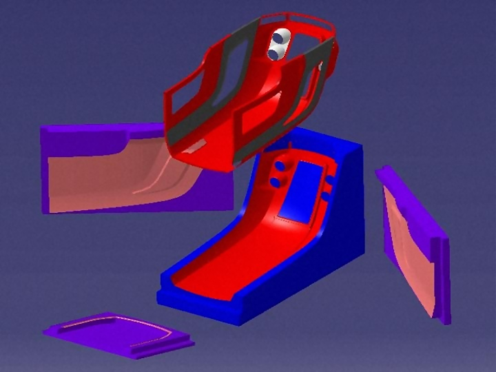
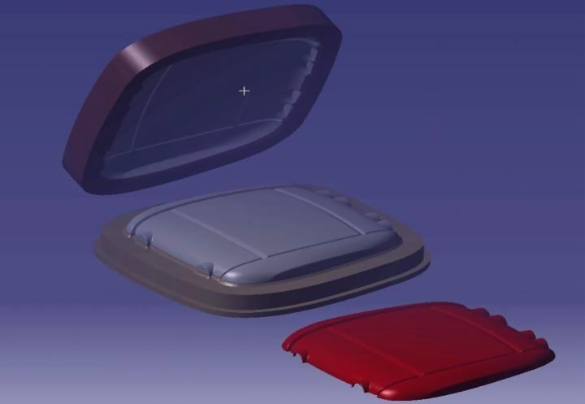
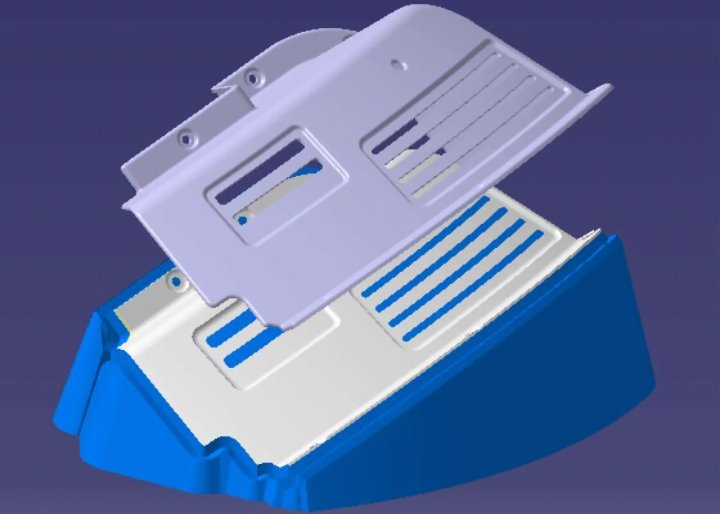
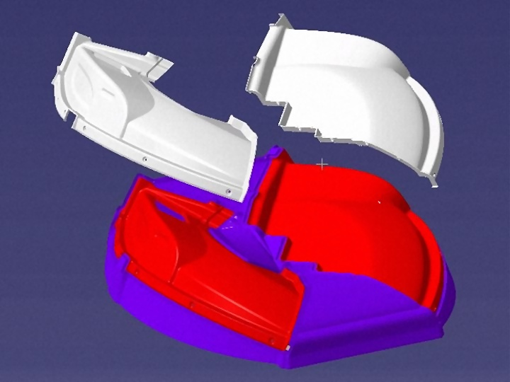
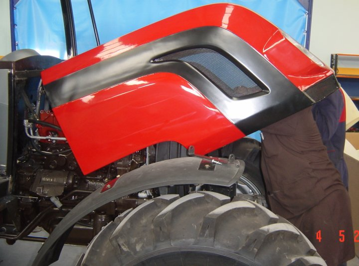
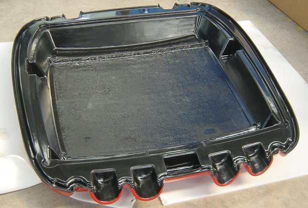
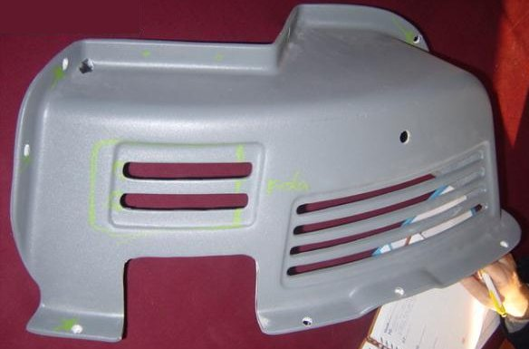
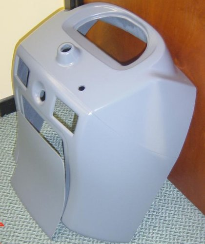
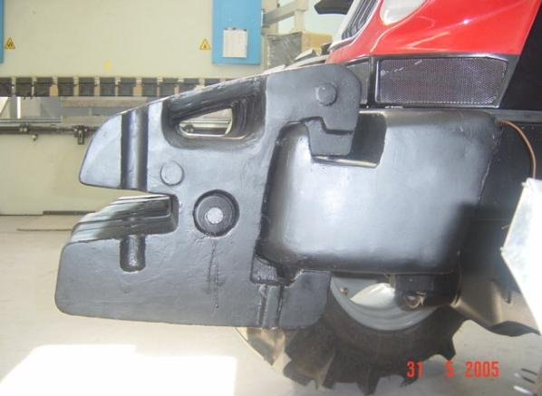
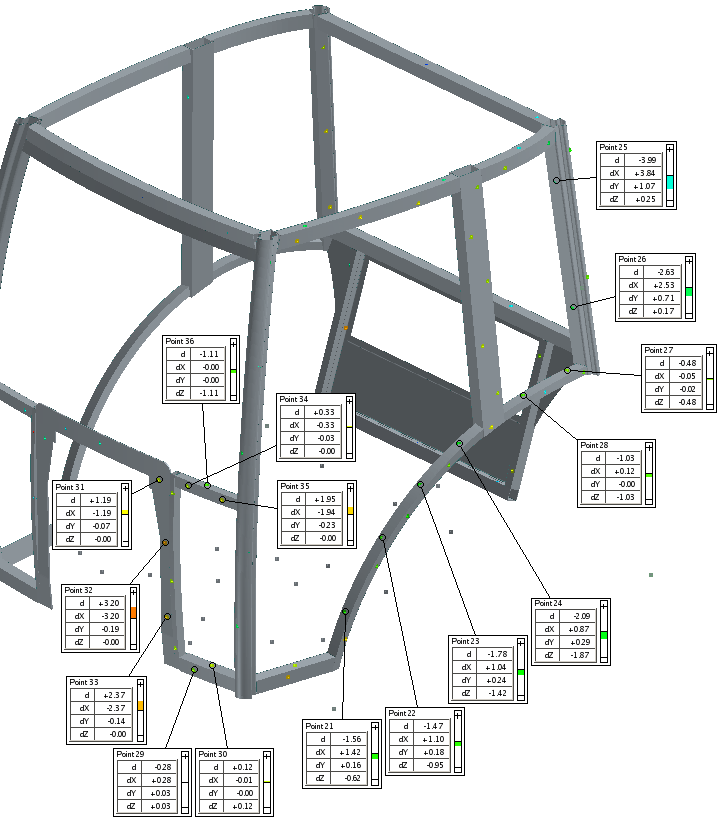

|
Prototip Araç ve Prototip Parça Çalýþmalarý:
Endüstriyel tasarýmý ZuluDesign tarafýndan yapýlmýþ, mühendislik çalýþmalarý Cadem tarafýndan tamamlanmýþ parçalarýn datasý daha sonra Atölye firmamýza gönderiliyor. Atölye'deki uzmanlarýmýz bu parçalarýn prototiplerinin seri üretimde öngörülen malzemesinden mi yoksa prototip yapýlmasýndaki hedeflerimize ulaþabileceðimiz benzer bir malzemeden mi yapýlacaðýna karar veriyor. Karar verilen malzemeye ve üretim tekniðine göre prototip kalýplarýn tasarýmý yapýlýyor ve kalýplarýn tamamý CNC tezgahlarda iþleniyor.
Atölye firmamýzýn gerek prototip gerekse seri üretime yönelik kalýp tasarýmý ve üretimindeki yoðun bilgi birikimi bize prototip parça ve araç hazýrlamamýzda ciddi anlamda hýz ve kalite kazandýrmaktadýr.

Seri üretimde el yatýrma yöntemiyle Polyester'den üretilecek olan ön kaporta parçasýnýn dört parçadan oluþan kalýbý... Bu kalýp daha sonra seri üretim için de model almak amacýyla kullanýlmýþtýr. Model almadan önce belirli sayýda parça doðrudan bu kalýptan alýnabilmektedir.

Tavan için tasarlanan ve üretilen kalýp

ABS malzemeden prototipi hazýrlanan iç kaplama parçalarýnýn kalýp tasarým çalýþmalarý.

Prototip parçalara örnekler:

Prototip ön kaporta. Üzerinde hava geçiþi için delikli saclar, iç kýsmýna karkas, kilit ve amortisör tutucularý gibi parçalar da çalýþýlmýþ durumda.

Prototip tavan. Ýç ve dýþ parçalar ayrý hazýrlanýp daha sonra bir araya getiriliyor.
Üzerinde projektör ve diðer monte edilecek parçalar için braketler de çalýþýlmýþ durumda.

Kol kapama parçasýnýn prototipi

Arka kaportanýn prototipi

Döküm olan ön aðýrlýk ve aðýrlýk askýsýnýn prototipi

Seri üretimde savurma tekniðiyle üretilen yakýt deposunun þamandýrasýyla ve diðer ekipmanýyla beraber çalýþacak þekilde polyesterden hazýrlanmýþ olan prototip
Ölçüm Çalýþmalarý:
Hazýrlanan prototip parçalarýn özellikle diðer parçalarla montaj açýsýndan uyumunu kontrol edebilmek amacýyla kritik ölçülerini kesinlikle kontrol ediyoruz. Bu parçalardaki sapmalarý belirliyor ve kaydediyoruz. Özellikle kabin karkasý, üzerine birçok parça monte edildiði için önem kazanýyor.

Örnek: Kabin karkasýnýn prototipinin CAD datasýndan sapmasýnýn TRITOP'la ölçülmesi
|